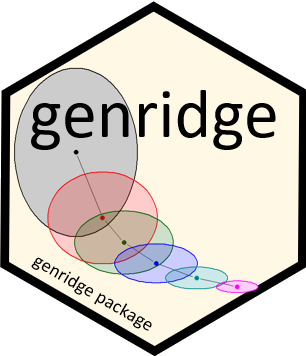
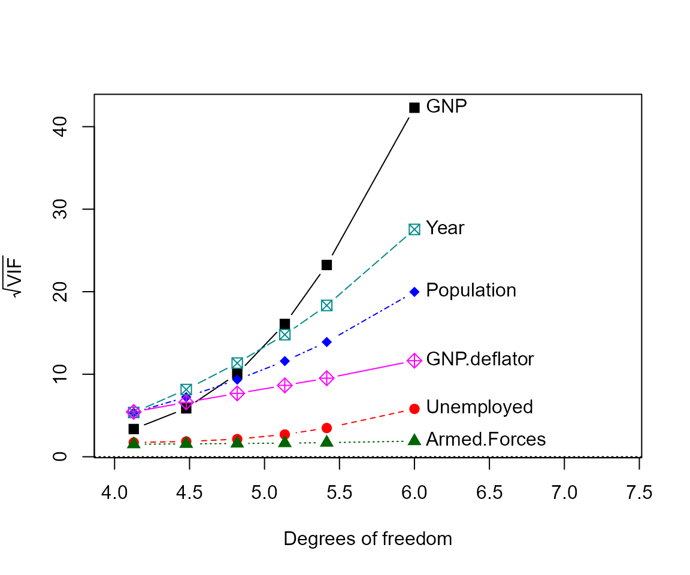
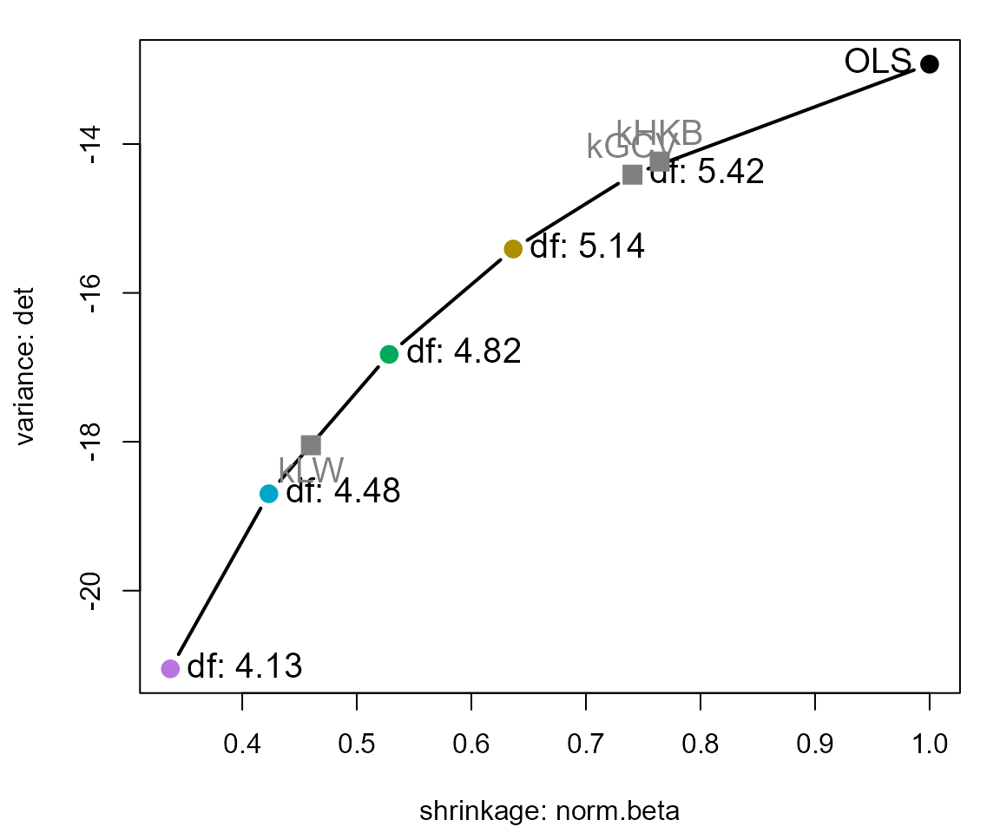
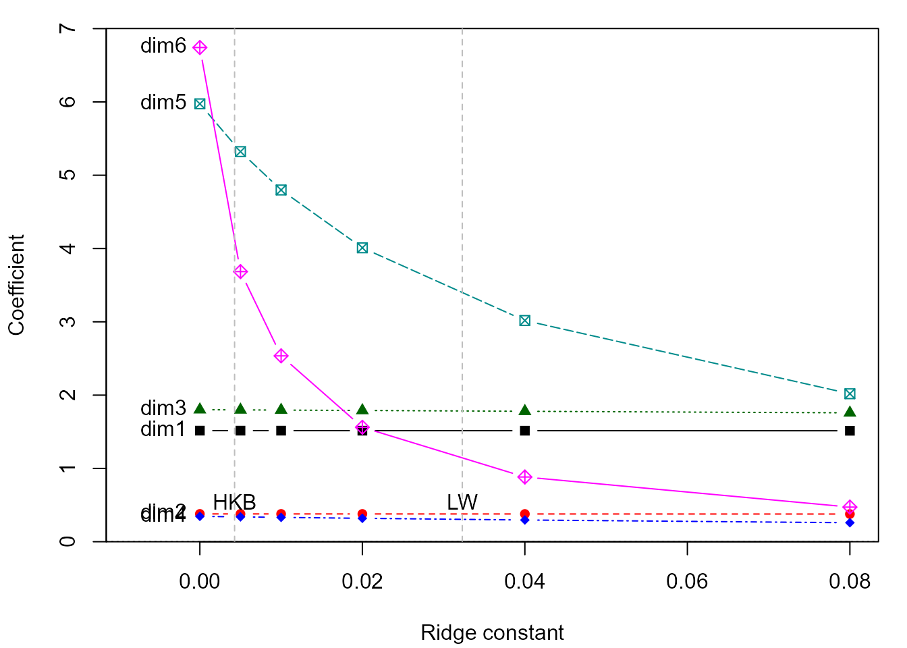
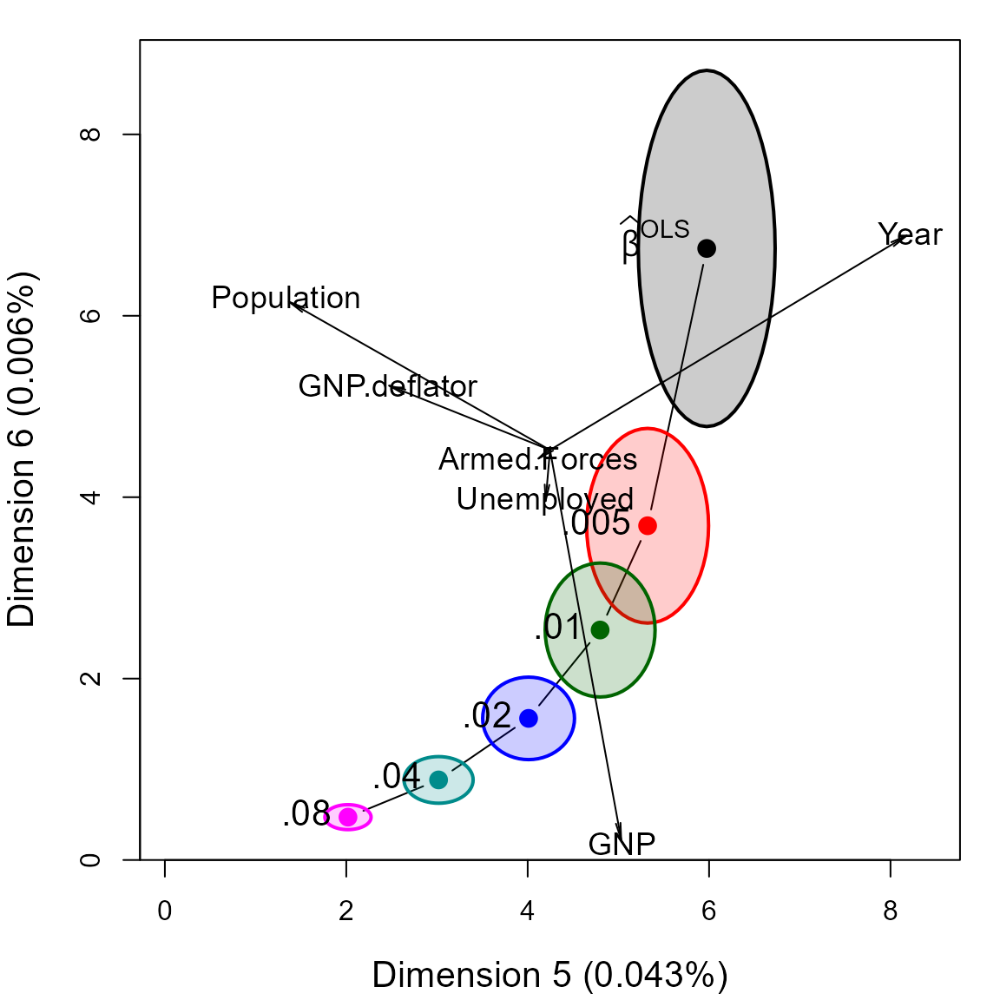

Getting started with genridge
Michael Friendly
2026-11-19
Source:vignettes/genridge.Rmd
genridge.RmdThe genridge package provides ridge regression with graphical methods that show both the bias (shrinkage) and the precision (inverse variance) of the estimated coefficients (Friendly 2013). This vignette introduces the main functions with two examples.
What is ridge regression?
Consider the standard linear model, \mathbf{y} = \mathbf{X} \boldsymbol{\beta} + \boldsymbol{\epsilon}, for p predictors. When the predictors are highly correlated, ordinary least squares (OLS) suffers from the well-known problems of collinearity: the estimates of \boldsymbol{\beta} are unstable, their standard errors are inflated, and the estimated coefficients tend to be too large in absolute value.
The OLS estimates, which minimize the residual sum of squares, are
\widehat{\boldsymbol{\beta}}^{\mathrm{OLS}} = (\mathbf{X}^\top \mathbf{X})^{-1} \mathbf{X}^\top \mathbf{y} \enspace ,
with \widehat{\text{Var}} (\widehat{\boldsymbol{\beta}}^{\mathrm{OLS}}) = \widehat{\sigma}^2 (\mathbf{X}^\top \mathbf{X})^{-1}. Ridge regression (Hoerl and Kennard 1970) replaces the residual sum of squares by a penalized form,
\mathrm{RSS}(\lambda) = (\mathbf{y}-\mathbf{X} \boldsymbol{\beta})^\top (\mathbf{y}-\mathbf{X} \boldsymbol{\beta}) + \lambda \boldsymbol{\beta}^\top \boldsymbol{\beta} \quad\quad (\lambda \ge 0) \enspace ,
whose solution is
\widehat{\boldsymbol{\beta}}^{\mathrm{RR}}_\lambda = (\mathbf{X}^\top \mathbf{X} + \lambda \mathbf{I})^{-1} \mathbf{X}^\top \mathbf{y} \enspace .
The ridge constant \lambda adds a small amount to the diagonal of \mathbf{X}^\top \mathbf{X}, which shrinks the coefficients toward zero. Shrinkage can also be expressed as the equivalent effective degrees of freedom, \text{df}(\lambda) = \text{tr}[\mathbf{X} (\mathbf{X}^\top \mathbf{X} + \lambda \mathbf{I})^{-1} \mathbf{X}^\top], which decreases from p (OLS, \lambda = 0) as \lambda increases. In general,
- the bias of the estimates increases as \lambda increases, but
- their sampling variance decreases as \lambda increases.
A main goal of genridge is to visualize this tradeoff, to help understand what ridge regression does and to choose a value of \lambda.
What genridge provides
Fitting. ridge() fits ridge regression
models for a vector of ridge constants (lambda) or of
effective degrees of freedom (df). It can be called
with
- a model formula and data frame:
ridge(y ~ x1 + x2, data, lambda = ), - a response vector and a matrix of predictors:
ridge(y, X, lambda = ), or - a model already fitted by
lm():ridge(lm(y ~ x1 + x2, data), lambda = ).
Predictors are centered and scaled (to unit mean square) before
fitting, as in MASS::lm.ridge(), so the coefficients are on
the scale of the standardized predictors. Most importantly,
ridge() also calculates the covariance
matrices of the estimated coefficients for each value of \lambda, so that their precision can be
studied and displayed.
Computation and summaries.
-
coef(),vcov(),print(): coefficients and their covariance matrices -
best(): optimal ridge constants according to the HKB, LW and GCV criteria -
vif(): variance inflation factors, for each value of \lambda -
precision(): measures of the precision and shrinkage of the coefficients -
pca(): transform the results to the space of the principal components (SVD) of the predictors
Plots.
-
traceplot(): the traditional univariate ridge trace plot -
plot(): bivariate ridge trace plots, with covariance ellipses of the coefficients -
pairs(): all pairwise bivariate ridge trace plots -
plot3d(): 3D ridge trace plots, with covariance ellipsoids (using rgl) -
biplot(): bivariate ridge trace plots in PCA space, with vectors for the predictors -
plot()methods for the results ofvif()andprecision()
Example: Longley’s data
The classic example for ridge regression is Longley’s (1967) data,
datasets::longley: 7 economic variables, observed yearly
from 1947 to 1962 (n = 16). The goal is
to predict Employed from GNP,
Unemployed, Armed.Forces,
Population, Year and
GNP.deflator. These data, constructed to illustrate
numerical problems in least squares software of the time, are purposely
perverse:
- each variable is a time series, so there is a clear lack of independence;
- worse, several predictors are structurally collinear:
GNP,Year,GNP.deflatorandPopulationall grow over time, andGNP.deflatoris a multiplicative factor to account for inflation.
data(longley)
str(longley)
#> 'data.frame': 16 obs. of 7 variables:
#> $ GNP.deflator: num 83 88.5 88.2 89.5 96.2 ...
#> $ GNP : num 234 259 258 285 329 ...
#> $ Unemployed : num 236 232 368 335 210 ...
#> $ Armed.Forces: num 159 146 162 165 310 ...
#> $ Population : num 108 109 110 111 112 ...
#> $ Year : int 1947 1948 1949 1950 1951 1952 1953 1954 1955 1956 ...
#> $ Employed : num 60.3 61.1 60.2 61.2 63.2 ...Fitting ridge regression models
We fit models for six values of the ridge constant, approximately equally spaced on a log scale, where \lambda = 0 gives the OLS estimates.
lambda <- c(0, 0.005, 0.01, 0.02, 0.04, 0.08)
lform <- Employed ~ GNP + Unemployed + Armed.Forces + Population + Year + GNP.deflator
lridge <- ridge(lform, data = longley, lambda = lambda)
lridge
#> Ridge Coefficients:
#> GNP Unemployed Armed.Forces Population Year GNP.deflator
#> 0.000 -3.447192 -1.827886 -0.696210 -0.344197 8.431972 0.157380
#> 0.005 -1.042478 -1.491395 -0.623468 -0.935580 6.566532 -0.041750
#> 0.010 -0.179797 -1.361047 -0.588140 -1.003168 5.656287 -0.026122
#> 0.020 0.499494 -1.245137 -0.547633 -0.867553 4.626116 0.097663
#> 0.040 0.905947 -1.155229 -0.503911 -0.523471 3.576502 0.321240
#> 0.080 1.090705 -1.086421 -0.458252 -0.085963 2.641649 0.570252The same model can be fitted from a response vector and predictor
matrix, or from a model already fitted with lm():
lridge2 <- ridge(longley$Employed, data.matrix(longley[, c(2:6, 1)]), lambda = lambda)
longley.lm <- lm(lform, data = longley)
lridge3 <- ridge(longley.lm, lambda = lambda)
all.equal(coef(lridge), coef(lridge3))
#> [1] TRUEInstead of lambda, the amount of shrinkage can be
specified by the effective degrees of freedom, which is often easier to
interpret: here, df = 6 corresponds to OLS, and smaller
values to more shrinkage.
lridge.df <- ridge(lform, data = longley, df = c(6, 5.5, 5, 4.5, 4))
lridge.df$lambda
#> [1] 0.000000 0.003928 0.013579 0.038270 0.103073Both lambda and df are stored in the
"ridge" object, so plots can use either.
Choosing the ridge constant
Several criteria have been proposed for choosing a value of \lambda to balance bias against precision.
ridge() calculates three, and best() collects
them, with the corresponding effective degrees of freedom:
- HKB: Hoerl, Kennard, and Baldwin (1975)
- LW: Lawless and Wang (1976)
-
GCV: the value of
lambdaminimizing generalized cross-validation (Golub, Heath, and Wahba 1979), among those supplied
best(lridge)
#> k df
#> HKB 0.004275 5.471
#> LW 0.032295 4.585
#> GCV 0.005000 5.415These values seem small, but as we will see, some of the coefficients are shrunk considerably even by these.
Collinearity: variance inflation factors
The effect of collinearity on the precision of each coefficient is measured by its variance inflation factor,
\text{VIF}(\beta_i) = \frac{1}{1 - R^2_{i | \text{others}}} \enspace ,
where R^2_{i | \text{others}} is the
squared multiple correlation of predictor i with all the others. vif()
calculates these for each value of \lambda. For OLS (the first row), nearly all
are dangerously high; ridge regression reduces them rapidly.
vridge <- vif(lridge)
vridge
#> Variance inflaction factors:
#> GNP Unemployed Armed.Forces Population Year GNP.deflator
#> 0.000 1788.51 33.619 3.589 399.15 758.98 135.53
#> 0.005 540.04 12.118 2.921 193.30 336.15 90.63
#> 0.010 259.00 7.284 2.733 134.42 218.84 74.79
#> 0.020 101.12 4.573 2.578 87.29 128.82 58.94
#> 0.040 34.43 3.422 2.441 52.22 66.31 43.56
#> 0.080 11.28 2.994 2.301 28.59 28.82 29.52The plot() method shows how they decrease, here on the
scale of \sqrt{\text{VIF}} (the factor
by which the standard error is inflated) against the effective degrees
of freedom:
clr <- c("black", "red", "darkgreen", "blue", "cyan4", "magenta")
pch <- c(15:18, 7, 9)
plot(vridge, X = "df", Y = "sqrt", col = clr, pch = pch, cex = 1.2, xlim = c(4, 6.5))
Square root of variance inflation factors against effective degrees of freedom.
Univariate ridge trace plots
The standard ridge trace plot simply shows the estimated coefficients for each predictor against the ridge constant. The dotted vertical lines show the values of the HKB and LW criteria.

Univariate ridge trace plot for the coefficients of predictors of Employed in Longley’s data.
It is often easier to interpret this plot against the effective degrees of freedom, which spaces the values of \lambda more evenly:

Univariate ridge trace plot of the coefficients against effective degrees of freedom.
But this is the wrong plot! It shows the bias that increases with \lambda, but not the accompanying decrease in variance, which is the reason for using ridge regression. The univariate trace plot is the wrong graphic form for what is essentially a multivariate problem: we want to see how both the coefficients and their variances and covariances change with \lambda.
Bivariate ridge trace plots
The bivariate analog of the trace plot (Friendly 2013) shows
covariance ellipses for pairs of coefficients. Their
centers, (\widehat{\beta}_i,
\widehat{\beta}_j), are the estimated coefficients, and their
size and shape show the sampling variances and covariance of these
estimates. Here, we plot GNP against four of the other
predictors.
op <- par(mfrow = c(2, 2), mar = c(4, 4, 1, 1) + 0.1)
lambdaf <- c(expression(~widehat(beta)^OLS), ".005", ".01", ".02", ".04", ".08")
for (i in 2:5) {
plot(lridge, variables = c(1, i),
radius = 0.5, cex.lab = 1.5, col = clr,
labels = NULL, fill = TRUE, fill.alpha = 0.2)
text(lridge$coef[1, 1], lridge$coef[1, i],
expression(~widehat(beta)^OLS), cex = 1.5, pos = 4, offset = .1)
text(lridge$coef[-1, c(1, i)], lambdaf[-1], pos = 3, cex = 1.3)
}
Bivariate ridge trace plots for the coefficients of four predictors against that for GNP in Longley’s data.
par(op)The coefficients for each pair of predictors trace a path generally toward the origin, (0, 0), and the covariance ellipses become smaller, showing the increase in precision. These plots also show the bivariate path of shrinkage, which is often far from a straight line toward the origin. For the ideas behind such “elliptical thinking” in statistics, see Friendly, Monette, and Fox (2013).
The pairs() method shows all pairwise views in a
scatterplot matrix:
pairs(lridge, radius = 0.5, diag.cex = 2, fill = TRUE, fill.alpha = 0.1)
Scatterplot matrix of bivariate ridge trace plots.
plot3d() extends this to three dimensions, drawing
covariance ellipsoids for three predictors in an interactive
rgl window:
Visualizing the bias-variance tradeoff
precision() calculates measures of the effect of
shrinkage on the sampling variance of the coefficients. Larger \lambda should lead to smaller \widehat{\text{Var}}
(\widehat{\boldsymbol{\beta}}), i.e., greater precision.
pridge <- precision(lridge)
pridge
#> lambda df det trace max.eig norm.beta norm.diff
#> 0.000 0.000 6.000 -12.93 18.1190 15.4191 1.0000 0.000
#> 0.005 0.005 5.415 -14.41 6.8209 4.6065 0.7406 1.276
#> 0.010 0.010 5.135 -15.41 4.0423 2.1807 0.6365 1.783
#> 0.020 0.020 4.818 -16.83 2.2180 1.0255 0.5282 2.262
#> 0.040 0.040 4.478 -18.70 1.1647 0.5808 0.4233 2.679
#> 0.080 0.080 4.128 -21.05 0.5873 0.2599 0.3373 3.027Among these, norm.beta =
\lVert\boldsymbol{\beta}\rVert /
\max{\lVert\boldsymbol{\beta}\rVert} measures shrinkage, and
det = \log{|
\text{Var}(\boldsymbol{\beta}) |} measures the variance of the
coefficients (the inverse of precision); see
help(precision) for the others. Plotting them against each
other gives a direct view of the tradeoff between bias and precision.
The plot() method also marks the values given by the HKB
and LW criteria:
plot(pridge, labels = "df", label.prefix = "df:", criteria = lridge$criteria)
Variance (log determinant) vs. shrinkage, showing the tradeoff between bias and variance. Points are labeled with the effective degrees of freedom.
Low-rank views: ridge regression in PCA space
Just as principal components analysis (PCA) gives low-dimensional
views of a data set, it helps to understand ridge regression.
pca() transforms a "ridge" object from the
space of the predictors to the space of the principal components of
\mathbf{X}, given by its singular value
decomposition.

Ridge trace plot for the coefficients in PCA space.
What may be surprising is that the coefficients for the first three components are hardly shrunk at all, even at the largest \lambda (by 0–2%), and the fourth only moderately. Most of the shrinkage is on the last two dimensions, which correspond to the smallest singular values: their coefficients are reduced to about 1/3 and 1/14 of their OLS values. These are the directions that contribute most to collinearity (Friendly and Kwan 2009). Because the principal components are uncorrelated, the ellipses in this space are aligned with the coordinate axes:
pairs(plridge)
Scatterplot matrix of bivariate ridge trace plots in PCA space.
The biplot view projects the original predictors
into the space of the two smallest dimensions, where the shrinkage
happens, as vectors showing how they contribute to these dimensions.
Here, Year and Population contribute mainly to
dimension 5, and a contrast between (Year,
Population) and GNP to dimension 6.
biplot(plridge, radius = 0.5, ref = FALSE, asp = 1,
var.cex = 1.15, cex.lab = 1.3, col = clr,
fill = TRUE, fill.alpha = 0.2, prefix = "Dimension ")
#> Vector scale factor set to 5.247
text(plridge$coef[, 5:6], lambdaf, pos = 2, cex = 1.3)
Biplot view of the ridge trace plot for the two smallest dimensions.
Example: Detroit homicide data
The Detroit data, used extensively by Miller (2002),
give the number of homicides per 100,000 population in Detroit from 1961
to 1973, with 13 potential predictors. Following Miller, we use the
“best” six-variable model, with predictors standardized for comparison,
and specify the amount of shrinkage by the effective degrees of
freedom.
data(Detroit)
Det <- as.data.frame(scale(Detroit[, c(1, 2, 4, 6, 7, 11)]))
Det <- cbind(Det, Homicide = Detroit[, "Homicide"])
dridge <- ridge(Homicide ~ ., data = Det, df = seq(6, 4, -0.5))
vif(dridge)
#> Variance inflaction factors:
#> Police Unemp GunLic HClear WhMale WkEarn
#> 0.00000 24.813 4.857 19.272 46.923 56.711 54.717
#> 0.03902 20.119 3.870 11.362 33.072 35.390 31.883
#> 0.10082 15.415 2.971 6.432 21.289 20.776 17.353
#> 0.20586 10.776 2.208 3.597 12.171 11.258 8.750
#> 0.40332 6.534 1.623 2.128 5.996 5.503 4.113The univariate ridge trace plot shows something that seems
paradoxical: the coefficients for Police,
HClear and WhMale do not shrink toward zero as
\lambda increases, but grow
away from it.
traceplot(dridge, X = "df")
Univariate ridge trace plot for the Detroit data. Some coefficients move away from zero.
This is not a contradiction. Ridge regression shrinks the length of the whole vector of coefficients, \lVert \boldsymbol{\beta} \rVert, not each coefficient separately; when predictors are highly correlated, the coefficients of some can grow as others shrink. The bivariate plots show the joint paths:
pairs(dridge, radius = 0.5)
Bivariate ridge trace plots for the Detroit data.
In PCA space, the behavior is no longer paradoxical: every component’s coefficient shrinks toward zero, by an amount that is greatest for the components with the smallest singular values (dimension 6 is reduced from 4.1 to 0.9, while dimension 1 hardly changes).

Ridge trace plot for the Detroit data in PCA space.
Other examples
The package includes several other data sets, each with examples:
Acetylene (collinearity created by polynomial and
interaction terms), Manpower (extreme collinearity among
hospital workload measures), prostate (the prostate cancer
data used as a running example in Hastie, Tibshirani and Friedman’s
The Elements of Statistical Learning), and diab
(diabetes progression, from Efron and Hastie’s Computer Age
Statistical Inference). Try, e.g.,
example(Manpower).
Multivariate ridge regression (experimental)
ridge() also accepts a matrix of several
responses, e.g., ridge(cbind(Y1, Y2) ~ x1 + x2, data),
fitting all responses with the same ridge constants. This extension is
experimental in this version, and will be described in
a separate vignette. See help("as.ridge") and
help("mlmridge-plots").